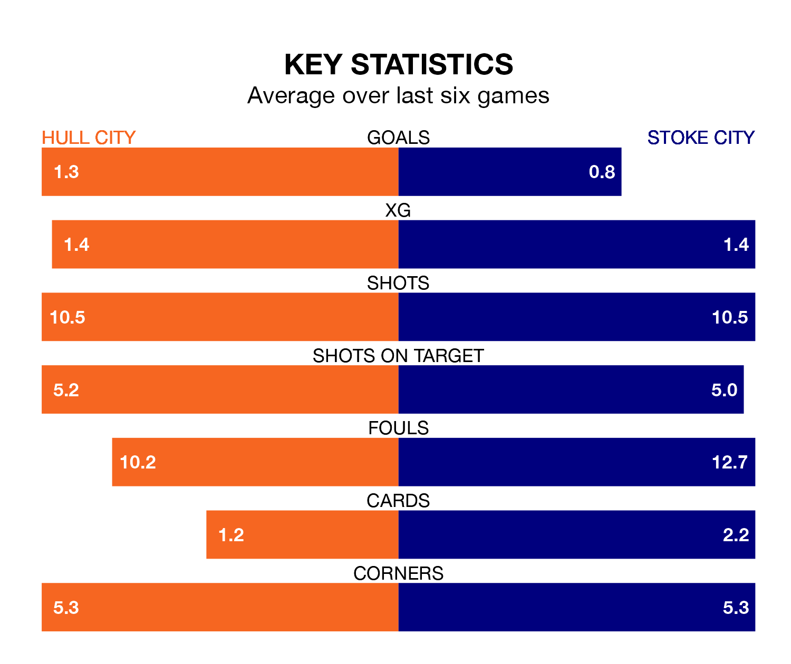

Hull City face Stoke City on Friday seeking to protect their long unbeaten run in EFL Championship.
The Tigers are unbeaten in seven, with three wins and four draws, ahead of the 3pm kick-off.
They face a Stoke team who have won three and lost four over the same number of games.
In the last 10 years, Hull and Stoke have played each other on 15 occasions. Hull won four of them, Stoke nine, and they drew twice.
On average, the Tigers scored 0.8 goals and the Potters 1.7 in those matches.
Their last meeting was on September 24, when Hull won 3-1 away.
With 35 goals in 38 games so far this season, Stoke are the league's third-lowest scorers with 0.9 goals per game. And they are conceding at an average rate, letting in 53 goals at a rate of 1.4 per game.
Hull, meanwhile, are average scorers, with 1.4 goals per game. They have conceded 1.2 goals per game.
Stoke City are 19th in the table after 38 games, of which they have won 11 and drawn eight, earning 41 points.
Hull City are 12 places ahead of the Potters in seventh, with 16 wins and 10 draws putting them on 58 points.
Hull's last match was on March 9, a 2-2 draw against Leicester City, with Anass Zaroury and Fabio Carvalho getting the goals for the Tigers.
Stoke lost 3-0 against Norwich City last time out, on March 16.
Updated: 12:39 (UTC), 26/03/24